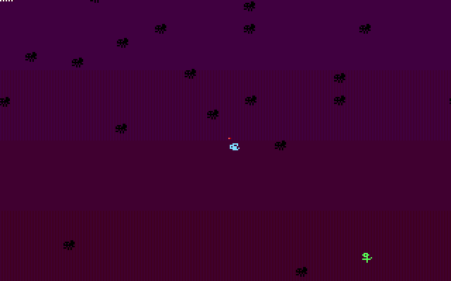
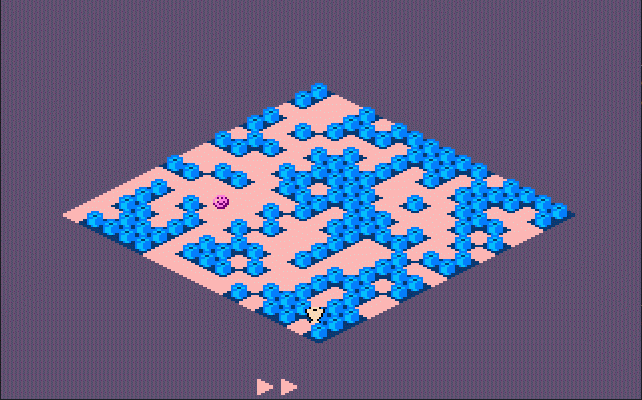
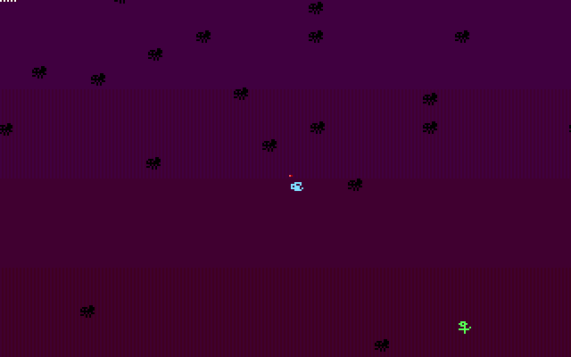
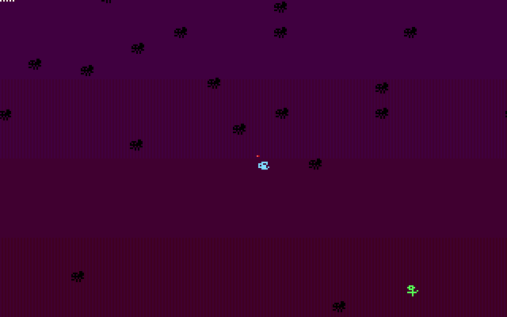
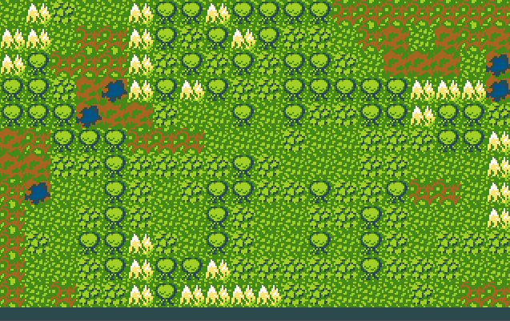
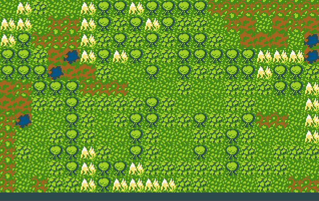

Assembly is a wild beast. You can tame it and become a real programmer or run away screaming and get lost in a mist of abstractions.
Current compilers can summon incredible machine code. They fear no man except this one place called boot sector. 512 bytes of space. No more no less. Only the best of the best would be able to fit in such narrow passage.
A hero is in need. Where we are going there will be no Operating Systems. No debuggers. One small mistake and the world freezes. A fatal system crash is unavoidable.
I took my tools, floppy disks and run for the incredible journey!
HOW TO RUN?
Boot from a floppy
It's simple.
Native
Burn the image to a clean floppy using DiskWrite or dd command. Restart computer with the floppy inserted. Boot from it.
Grab gameXX.com file and run it on MS-DOS or Windows 9x.
Emulation
Use the browser and click on jsdos instance link or download floppy image and run on copy.sh.
Use qemu or 86box for offline emulation.
Using online emulation is also possible. You can use copy.sh (floppy image) or BootSector.Games (source code) to run the games.
Run in DOS
Download the COM file and run it in DOSBox/dosemu or on a real machine with FreeDOS or MS-DOS.
ON-LINE RESOURCES
All the useful things I found for the x86 Assembly and boot sector programming.
Software
Fresh - a visual assembly language IDE with built-in FASM assembler.
My first game for boot sector. I learned basics needed to have a minimum viable game engine. Double-buffering. Keyboard input. A lot and a lot of try and error.
I survived. As a result I'm present this simple game.
Game-play
Player steers movement of a rocket: left or right. Trying to avoid blocks and land on a sailing platform instead of an ocean.
FLY ESCAPE
Fly Escape is a boot sector game developed by Krzysztof Krystian Jankowski ^ P1X, released version 2.1 on May 26, 2024. The game runs on Intel 286 processors in 16-bit real mode and features a simple yet engaging game-play experience in a VGA 320x200x256 graphics mode. The objective of the game is to control a fly, avoid spiders, and collect flowers to advance through levels.
Features
VGA Graphics: Runs in 320x200 resolution with 256 colors.
Double Buffering: Smooth rendering with minimal flickering.
Player Control: Control a fly, avoiding spiders and collecting flowers.
Randomized Levels: Entity positions and rotations are pseudo-randomly generated.
Collision Detection: Accurate pixel-based collision detection.
Multiple Levels: Progress through increasing levels of difficulty.
Life System: Start with 4 lives; lose a life when colliding with spiders.
Animated sprites: Three sprites each 8x7 pixels in 2 frames
Level and live indicator: Dots in top-left of the screen and a line under fly.
Keyboard Controls: Rotate the fly to navigate through the game environment.
Compact Size: Entire game fits within a 512-byte boot sector.

BIT OF A TREASURE
The game involves navigating a player character through a level to collect a treasure while avoiding collisions with non-movable tiles. The game features simple but effective isometric graphics to create a pseudo-3D effect.
Game-play
Collect the treasure and avoid the walls. Swap level designs to find the best path.
Controls
Arrow keys - move the player
Enter - toggle level designs (4 in total)
ESC - restart game after failed move (Spacebar on bootsector version)

Features
Pixel Art Sprites: 8x8 with 2 colors
Isometric Graphics: The game employs isometric projection to create a 3D-like visual experience using 2D sprites.
Map: One, procedurally generated, map with four level designs.
VGA Mode: Utilizes 320x200 pixels VGA mode with 256 colors.
Keyboard Controls: Intuitive input is used to control the player character. Auto alignment moves to the grid.
Double Buffering: Implements double buffering to reduce flickering and provide smoother animations.
MOTH HUNTER
IMPORTANT: Mouse support is required!
Moth Hunter is an arcade game for DOS. The player aims to shoot incoming moths. The color of a moth indicates how long it is on the screen. White moths attacks player taking one life.
Game-play
Player aims to the incoming moths.
(MYSTERIES OF THE) FORGOTTEN ISLESIN-PROGRESS
Logic 2D game in VGA graphics, with PC Speaker sounds.
Explore the islands. Find all gold and bring it to the chest.
Use rocks to build bridges on shallow water. Avoid wildlife.
Features
16-bit Assembly, FLAT assembler
no operating system need, runs on bare-metal x86 IBM compatible, starting from 386 40MHz, 1MB RAM
512 bytes for custom bootloader with game instructions
5KB for game code, ten floppy sectors
custom bootloader with game title and description
keyboard input, arrow keys, enter, esc
music tune and sound effects from PC Speaker
VGA graphics, 320x200, 256 colors
double-buffering
custom, shared palettes (GameBoy Color style)
sprites/tiles, 2-bit, 4 color sprites (with transparency)
maps: made of 16x8 meta-tiles, meta-tile made of 2x2 tiles, 32x16 gameplay grid
entities system, simple interactions (building bridge using rock)


 



 
